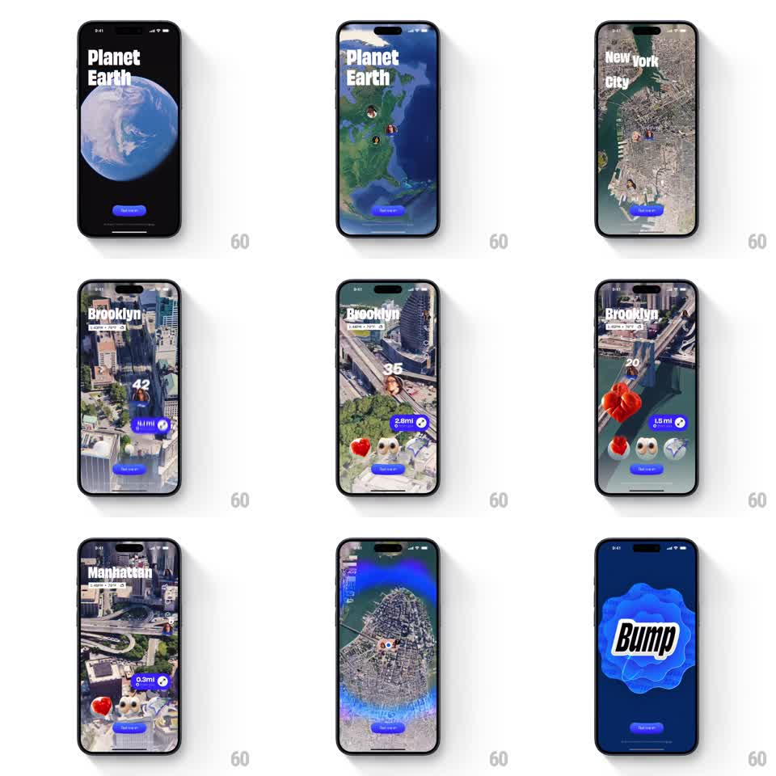

Media
Frame-by-frame

Rebuild this animation 1:1: Bump's splash - one continuous 3D zoom from a Planet Earth view down through New York City and Brooklyn to street level, location labels and friend pins updating along the way, landing on a pulsating blue Bump logo.

Rebuild this animation 1:1: Bump's splash - one continuous 3D zoom from a Planet Earth view down through New York City and Brooklyn to street level, location labels and friend pins updating along the way, landing on a pulsating blue Bump logo. ## Integration Integration: stack-agnostic spec - springs given as stiffness/damping, timed motions as duration + curve; map every value to your framework and animation library of choice. ## Scene Satellite-style 3D map filling the screen, a blue "Tap to go" pill fixed at the bottom. The zoom starts on the globe labeled "Planet Earth", dives through "New York City", tilts into an angled 3D "Brooklyn" view with friend avatar pins, emoji clusters (heart, ghost, rocket), distance chips (0.1mi, 2.6mi, 1.5mi) and online counts (42, 35, 20), sweeps past "Manhattan", then flares into a dark blue screen where a liquid blue blob pulses behind the black "Bump" wordmark. ## Motion spec Pattern: continuous camera dive with staged label and pin reveals. - The camera zooms nonstop (exponential scale over ~4s, slight ease at the end); the map tilts from top-down to ~45deg during the Brooklyn leg. - Location labels crossfade as their tier becomes current (Planet Earth to New York City to Brooklyn to Manhattan, ~200ms each). - Pins, emoji clusters, and distance chips pop in with springs (stiffness ~350, damping ~20, staggered 80ms) as the street level arrives. - The dive ends in a blue flash that resolves to the logo screen; the blob behind "Bump" breathes (scale 1.0 to 1.06, 1.5s sine) continuously. ## Calibration - The zoom must feel like one unbroken fall - no cuts between city tiers. - Keep exactly one location label on screen at a time; overlapping labels read as clutter. ## Reduced motion Three discrete steps (globe, city, street) crossfaded, then the logo screen fades in. ## Don't miss - The emoji clusters float above pins with a tiny bob (translateY +-3px, 1.2s) - they are alive, not markers. - The final logo screen is the only non-map frame; the flare transition into it should be fast (~250ms).